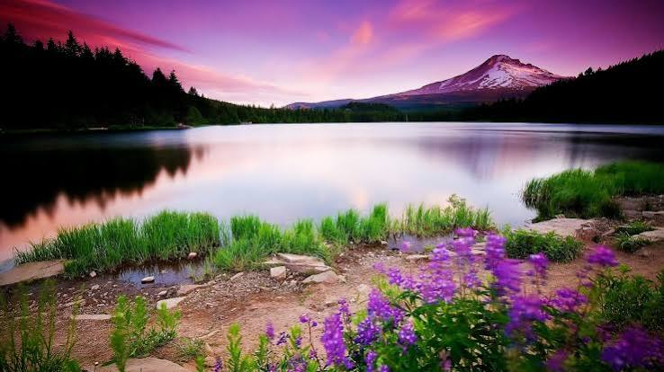
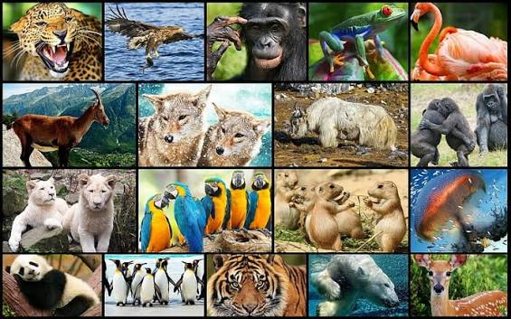
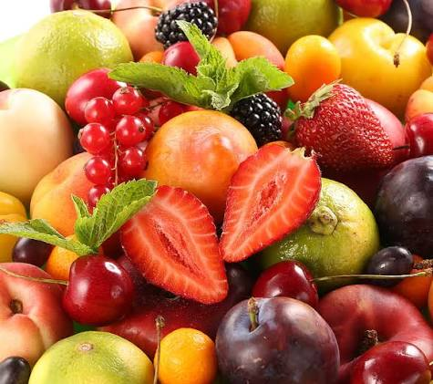
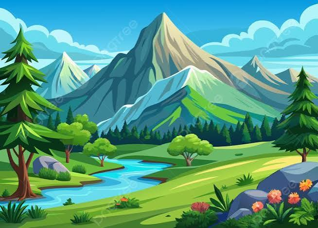

La naturaleza nos ofrece paisajes increíbles, bosques, ríos y montañas que llenan de vida y belleza nuestro planeta. Es nuestra fuente de vida y equilibrio.

Existen miles de especies fascinantes, desde los animales más pequeños hasta los más grandes. Cada uno cumple una función importante en la naturaleza y merece nuestro respeto y protección.

Las frutas son alimentos naturales llenos de vitaminas, minerales y energía. Vienen en muchos colores, sabores y formas; crecen en plantas y árboles, y son esenciales para nuestra salud.
Las rosas son flores conocidas por su belleza y aroma delicado. Tienen muchos colores y simbolizan amor, respeto y admiración. Son uno de los regalos más apreciados en todo el mundo.

Los paisajes naturales muestran la belleza de nuestro planeta con montañas, lagos, campos y lugares únicos que nos permiten disfrutar de la tranquilidad y armonía de la naturaleza.